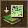
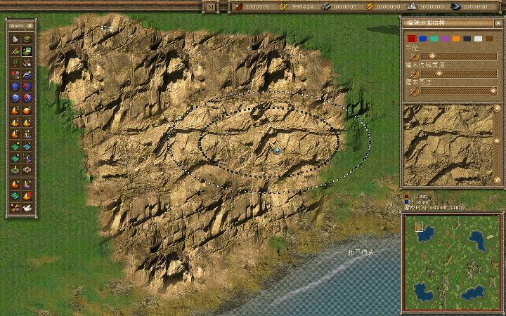

要创造逼真的风景地貌，你可以选择用这种模式来创建。点击这个按钮进入地面结构模式。在右边的选项栏裡会有很多种地面结构供挑选。你可以使用滚动条来选择其他的结构。
在地图上点击鼠标左键，就可以使鼠标画笔扫过的区域填满你选择的地面结构。你可以用选项栏的上滚动条调节鼠标画笔的大小。下滚动条可以调节地面结构的清晰程度。

当你创建一张地图的时候，你可以精确选择你想要的地面结构来完善你的地图。之后，按住鼠标左键，使用键盘上的方向键，可以移动鼠标画笔下面的图案。